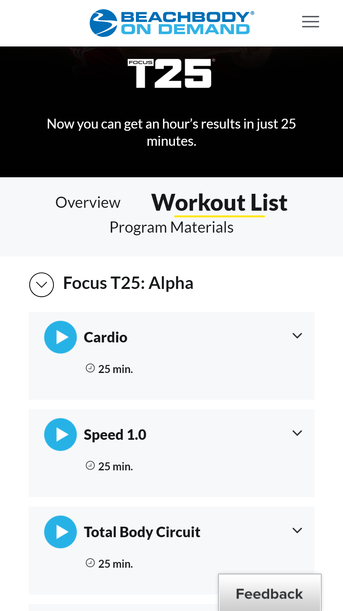
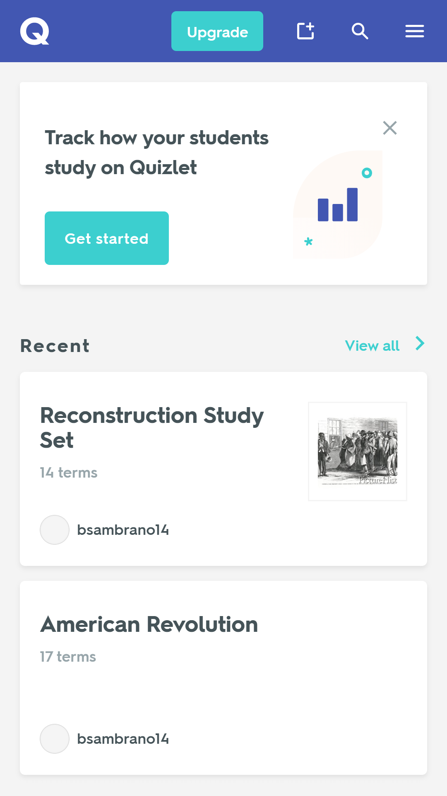

PARC: Repetition
Thriftbooks Homepage
thriftbooks.comThis page demonstrates repetition in a variety of ways. First, the colors of green, maroon, and purple are repeated throughout the whole page and site. You can see them in the heading and throughout the main page. The colors are even tied into the graphics. Secondly, the formatting for the book advertisements is consistent throughoutout. Each has the book taking up the top 2/3 of the box with a green title, black author name, and the price in red. Additionally, the fonts are consistent throughout. The size varies based on the importance (visual hierachy tie-in), but they are the same fonts.
Hick's Law
T25 Workout List
beachbodyondemand.com Hick's Law says the more choices you give someone, the longer it takes for them to decide. Beachbody does really good at using this principle on their workout program pages to get people to choose a workout. The example workout program I chose was T25. The different levels are shown (Alpha, Beta, Gamma). The user first has to choose their level. Then they can select from 5-6 workouts on that level. This gives the user less choices at a time which can help them choose more quickly based on Hick's law.
White Space & Clean Design
Quizlet Homepage
quizlet.com Quizlet did a great job of utilizing white space and clean design on their homepage. You can see there is plenty of padding around each text feature: study set names, amount of terms, set creator, button text, etc.. Each study set gets it's own section with whitespace in the section and also has whitespace separating it from other study sets. They also push their side menu into a dropdown menu in smaller viewports which adds to the clean design on mobile browsing. The clean design I think also works hand in hand with Hick's law, limiting the amount of choices there are as a way to help guide the user.